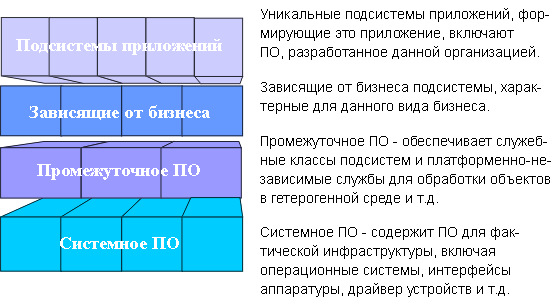

|
Структура уровней системы представляет собой упорядоченную совокупность множеств функциональных элементов, в которой
функции приложения отнесены к верхним уровням, функции предметных областей - к промежуточным уровням, а функции
конкретных сред развертывания - к нижним уровням.
Количество и состав уровней зависят от сложности решения и его предметной области.
-
Как правило, для функций приложения отводится один уровень.
-
По итогам разработки приложений в новых предметных областях группы разработчиков делятся опытом с другими
проектными группами. Этот опыт представляет собой практически готовый уровень предметной области, который для
удобства можно разделить на несколько промежуточных уровней.
-
Для решений, в которых важную роль играет сложное системное программное обеспечение, характерны хорошо развитые
нижние уровни, в число которых могут входить несколько уровней промежуточного и системного программного
обеспечения.
Рекомендуется разделить подсистемы на уровни, расположив подсистемы уровня приложения на верхних уровнях иерархии, а
подсистемы взаимодействия с конкретным аппаратным обеспечением и операционными системами - на нижних уровнях
архитектуры. Между ними, на промежуточных уровнях, должно находиться программное обеспечение общего назначения.
Ниже приведен пример приложения с четырьмя уровнями:
-
Верхний уровень (уровень приложения) содержит службы, предоставляемые на уровне приложения в целом.
-
Второй уровень (уровень предметной области) содержит функциональные элементы, относящиеся к какой-либо
предметной области и применяемые в нескольких приложениях одновременно.
-
Уровень промежуточного программного обеспечения содержит компоненты GUI, интерфейсы к системам управления
базами данных, независимые от платформы службы операционной системы компоненты OLE, включая электронные таблицы и
редакторы диаграмм.
-
На нижнем уровне (уровень системного программного обеспечения находятся такие компоненты, как операционные
системы, базы данных, интерфейсы к конкретному аппаратному обеспечению и т.д.

Структура уровней приложения от наименее детализированных до наиболее детализированных функциональных элементов.
|